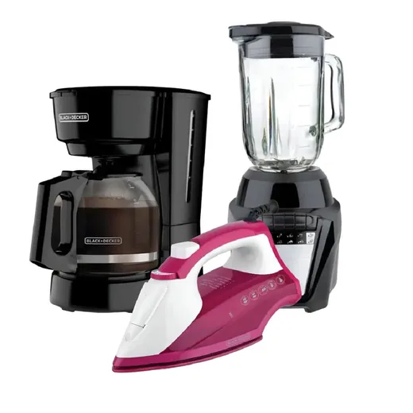
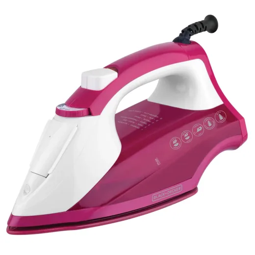
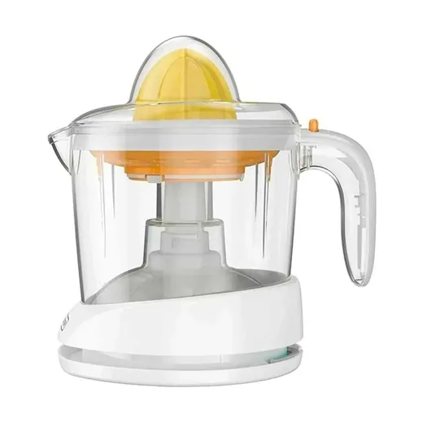

Inicio › Otros de tecnología y hogar

Black+Decker
Horno Black and Decker Eléctrico de 6 rebanadas
L 2,299
En Walmart
Precio en cada tienda
| Tienda | Precio | Antes | Disponibilidad | |
|---|---|---|---|---|
| Walmart | L 2,299 | — | Disponible | Ver en tienda › |
Precios referenciales tomados de cada tienda el 28 de noviembre de 2026. El precio válido es el que muestra la tienda al comprar.
Historial de precio
Lo seguimos desde el 13 de noviembre. Precio más bajo registrado: L 2,299 en Walmart (13 de noviembre), igual que hoy. El precio no ha cambiado en ese tiempo.
Características
| Color | Gris |
|---|---|
| Marca | Black & Decker |
| Medida de altura | 29.4 cm |
| Medida de ancho | 45.7 cm |
| Medida de peso | 2 kg aproximadamente |
| Medida de profundidad | 33 cm |
| Modelo o serie del producto | TO1950SBD |
| País de Origen - Ensamblaje | China |
| Acabado | Liso |
| Material | Metal, plástico resistente |
| Uso recomendado | Tostador |
| Forma | Rectangular |
| Requiere ensamblaje | Sí |
| Voltaje | 120 V |
| Fabricante | Black & Decker |
Descripción
El horno de seis Rebanadas de pan Black+Decker tiene tecnología de convección que circula aire caliente para cocinar pizzas y congelados favoritos por mínimo tiempo. El interior está diseñado para el enfoque hacia la comida rápida e incluso cocinar. Las Funciónes de Coción son Hornear, asar, tostar y mantener caliente. Tiene una capacidad para una pizza de 9" o seis Rebanadas de pan.
Otros otros de tecnología y hogar Black+Decker

Combo Black+Decker Plancha, Cafetera, LicuadoraL 2,480En Diunsa Parrilla Black and Decker de teflón y temperatura ajustableL 1,550En Walmart
Parrilla Black and Decker de teflón y temperatura ajustableL 1,550En Walmart Horno de Convección Black+Decker Extra Ancho con 6 Funciones AutomáticasL 3,299En Walmart
Horno de Convección Black+Decker Extra Ancho con 6 Funciones AutomáticasL 3,299En Walmart Cafetera Black + Decker 4 en 1 Filtro PeL 1,190En Diunsa
Cafetera Black + Decker 4 en 1 Filtro PeL 1,190En Diunsa Exprimidor de Citricos Black + Decker deL 849En Diunsa
Exprimidor de Citricos Black + Decker deL 849En Diunsa
Plancha de vapor Black+Decker Suela de Cerámica modelo IR1853L 669En Walmart
Exprimidor de Citricos de 1 Litro Black+L 569En Diunsa Plancha de vapor Black & Decker GLI Blue cerámicaL 545En Walmart
Plancha de vapor Black & Decker GLI Blue cerámicaL 545En Walmart